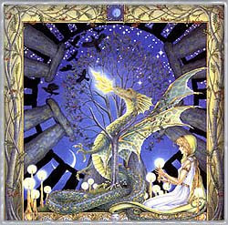

|

Mes: Enero-Febrero
Signo: Acuario
Hierba lunar: Angélica
Animal: Delfín
Color: Azul, violeta, blanco y plateado.
Diosas: Kuan-yin, Asheráh.
Nombres: Luna de Luis (serbal) para los celtas, Luna de la Semilla para la tradición apalache, Luna del Hambre para los nativos americanos del nordeste, luna de la tormenta o luna avivadora para los wiccanos.
La Luna Avivadora atraviesa temporales y tormentas de nieve para conducirnos a la parte final del invierno. Los árboles más tempraneros empiezan a florecer y podemos ver cómo algunas flores y hierbas sobresalen de la nieve recordándonos que la primavera se acerca.
La luna de Acuario nos invita a experimentar el amor incondicional y desinteresado hacia nuestros semejantes. Su energía favorece todos los asuntos que tengan que ver con la amistad y con actividades sociales altruistas. Las virtudes a destacar son el respeto, la empatía, la creatividad. Es un buen momento para iniciar una labor de voluntariado o para participar en actividades sociales de corte vanguardista. Participad en debates y en actividades culturales, filosóficas y políticas. Las características lunares de este mes son por tanto la resolución de conflictos de un modo creativo no violento y la compasión.
FESTIVIDADES RELACIONADAS:
- Lupercalia: Los Idus de Februaria era el momento de la purificación y la fertilidad en la antigua Roma. Es la estación del año en la que los lobos entran en celo. La luna loba de febrero rememora a la loba (Fauno Luperco) que dio de mamar a Rómulo y Remo. El 15 de febrero se llevaba a cabo el ritual pagano que consistía en sacrificar un macho cabrío y un perro en honor a Pan Liceo, protector del lobo, como símbolos de fertilidad . Cuando la sangre era derramada se elegía a dos nobles adolescentes (luperci: amigos del lobo) como representantes de la nueva generación. Se les impregnaba la frente con lana empapada en sangre. A continuación se celebraba un banquete en el que se comían a los animales sacrificados. Se guardaban las pieles para hacer látigos y prendas para los sacerdotes. Con lo que sobraba se golpeaban a las mujeres para estimular la fertilidad y los partos sanos. Lo más normal era que todo acabara en una gran orgía.
- Powamu: Durante la luna llena del segundo mes el pueblo Hopi celebra la ceremonia kachina para favorecer los cultivos. Se representa el regreso del espíritu del maíz, dios de la vegetación, Muy´Ingwa. La comedia de la ceremonia sirve para desatar todo el estrés acumulado durante el invierno.
- Rosh Hoshanah Lailonot: El decimoquinto día de Shevat los judíos celebran el Día del Árbol. El año nuevo de los árboles, Tu Bishevat, se celebra cuando en los climas mediterráneos el invierno llega a su fin. Para la tradición judía es el día en el que el. Creador decide qué plantas sobrevivirán al año nuevo. En Israel se ha convertido en una fecha especial para cuidar de la naturaleza plantando árboles a gran escala. En los países áridos los árboles son considerados como sagrados. Una costumbre relacionada es la de plantar un cedro cuando nace un niño y un ciprés cuando nace una niña. Se utiliza la madera para las camas de los matrimonios recién casados. En la antigüedad, las imágenes de la diosa madre Asheráh se tallaban en troncos de árboles. Se colocaban en el Templo y se remplazaban cada cierto tiempo.
|
 RSS
RSS